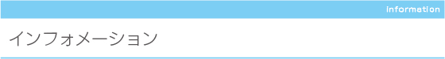

本会は、平成3（1991）年11月に発足以来、点訳・墨訳・触図制作により視覚障がい者への協力と
交流を 図ることを目的とし、活動するサークルです。
会員数：19名（令和8年5月現在）
顧 問：河野孝志氏（文京区視覚しょうがい者協会 副会長）
| ◆活動日／場所 |
|
| ◆主な活動 |
|
| ◆入会金・年会費 |
|
点訳にご興味のある方・見学ご希望の方へ
六点会では随時点訳のボランティアを募集しています。
月例勉強会は概ね上記の通り行っておりますが、都合上日時・場所の変更もありえます。
また、月例勉強会の他、パソコン点訳・触図活動は文京区社会福祉協議会活動室にて
随時行っております。見学ご希望の方は、予め、活動日をお問い合わせください。
六点会では随時点訳のボランティアを募集しています。
月例勉強会は概ね上記の通り行っておりますが、都合上日時・場所の変更もありえます。
また、月例勉強会の他、パソコン点訳・触図活動は文京区社会福祉協議会活動室にて
随時行っております。見学ご希望の方は、予め、活動日をお問い合わせください。
|
サークル・六点会メールアドレス
|
tenji610@6tenkai.sakura.ne.jp
|
文京区の地域活動情報サイト「どっとフミコム」内でもサークル・六点会の紹介ページをご覧いただけます。